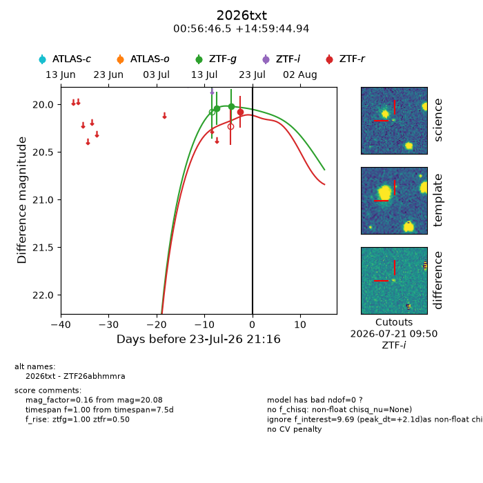
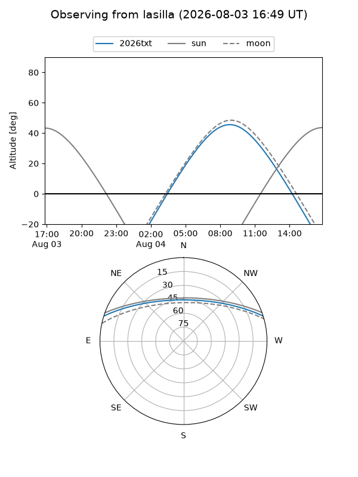
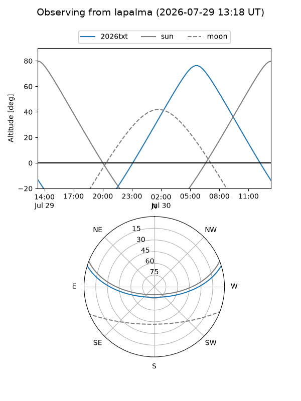
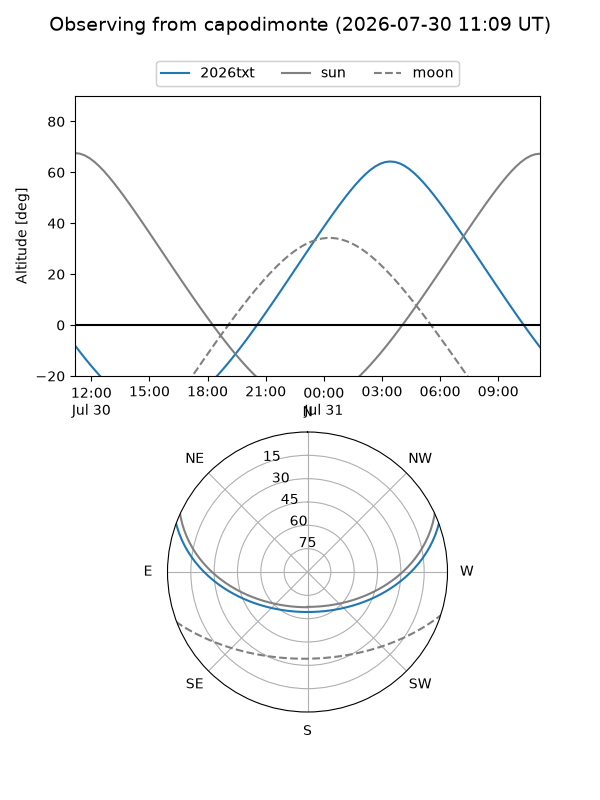
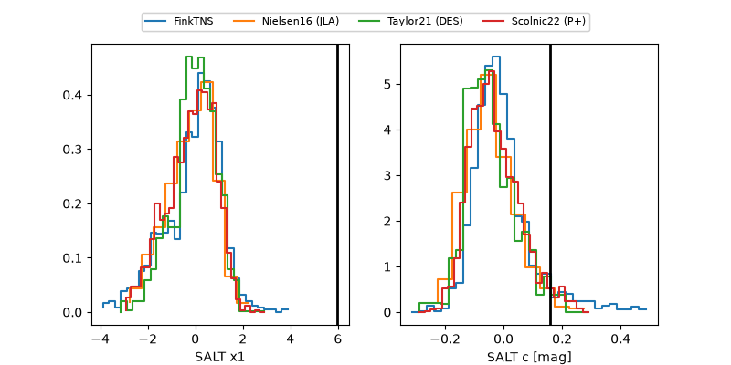

2026txt
Target 2026txt at 2026-07-23 21:19
Aliases and brokers:
FINK-ZTF: ztf.fink-portal.org/ZTF26abhmmra
Lasair-ZTF: lasair-ztf.lsst.ac.uk/objects/ZTF26abhmmra
ALeRCE-ZTF: alerce.online/object/ZTF26abhmmra
YSE-PZ: ziggy.ucolick.org/yse/transient_detail/2026txt
TNS name: wis-tns.org/object/2026txt
Direct TNS query: direct search
alt names
ZTF26abhmmra (ztf,fink_ztf)
2026txt (tns,yse)
Coordinates:
equatorial (ra, dec) = 14.1939,+14.99582
equatorial (HMS+DMS) = 00:56:46.54,+14:59:44.94
galactic (l, b) = (124.8531,-47.85602)
Flags:
TNS type: nan
peak dt: +2.1
Photometry:
last ztfg=20.02, ztfr=20.08
2 ztfg, 1 ztfr detections
Lightcurve

Visibility



Additional plots
